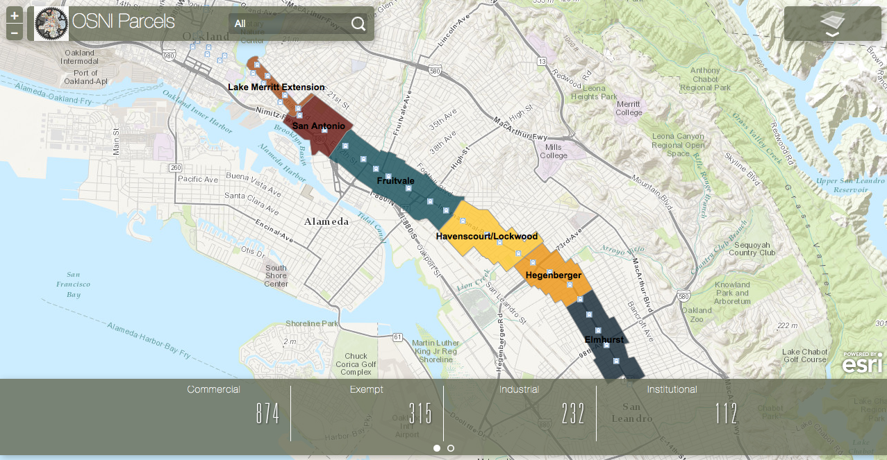

Moving from Paper Maps:
Delivering a better product

TO
Assignment:
Anaylze the impact of a propsed Bus Rapid Transit Line on existing land uses on the International Blvd corridor
The Challenge:
Collect Data
Find Potential Impact
Produce Visualizations (Charts & Maps)
Present Findings
The Difficultly Challenge:
Processing this amount of information
Making presentation easy to digest
Make data publically available and not just sitting on a self
Gatekeepers of information
Moving beyond Paper Maps
Staff Time & Resources Fielding Questions
Misscommunication
My Solution:
Create the standard set of maps and charts
How to not overwhelm the audience
Online Map
Make data publically available
current-visible
Highlight red blue green
Implementation of Solution:
Processing this amount of information
How to not overwhelm the audience
Moving beyond Paper Maps
Make data publically available
Odd:
See Full MapSuccess
Processing this amount of information
How to not overwhelm the audience
Moving beyond Paper Maps
Make data publically available
current-visible
Highlight red blue green